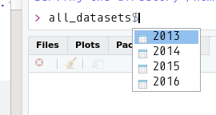

Chapter 8 Defining your own functions
In this section we are going to learn some advanced concepts that are going to make you into a full-fledged R programmer. Before this chapter you only used whatever R came with, as well as the numerous R packages. This already allowed you to do a lot of things and solve a variety of problems! The next step is now to learn how to actually build your own functions.
8.1 Control flow
8.1.1 If-else
Imagine you want a variable to be equal to a certain value if a condition is met. This is a typical
problem that requires the if ... else ... construct. For instance:
If a > b then f should be equal to 20, else f should be equal to 10. Using if ... else ... you can achieve this like so:
Obviously, here f = 10. Another way to achieve this is by using the ifelse() function:
This is exactly equivalent as using the longer if ... else ... construct.
Nested if ... else ... constructs can get messy:
if (10 %% 3 == 0) {
print("10 is divisible by 3")
} else if (10 %% 2 == 0) {
print("10 is divisible by 2")
}## [1] "10 is divisible by 2"10 being obviously divisible by 2 and not 3, it is the second phrase that will be printed. The
%% operator is the modulus operator, which gives the rest of the division of 10 by 2.
Remember that if you are working on a dataset and wish to create a new column with values
conditionally on the values of another column, you can use case_when(), which is much easier.
8.1.2 For loops
You are wondering why it took so long for for loops to show up. This is because we learned about
map() and reduce() which solve a lot of problems that for loops were originally intended to
tackle. And actually, you should only use for loops in a very specific situation; whenever you have
a recursive relationship. For all the rest, map() and reduce() are much easier, and return nice
objects. However, for the sake of completeness, I will present for loops in the section.
For loops make it possible to repeat a set of instructions i times. For example, try the following:
## [1] "hello"
## [1] "hello"
## [1] "hello"
## [1] "hello"
## [1] "hello"
## [1] "hello"
## [1] "hello"
## [1] "hello"
## [1] "hello"
## [1] "hello"If you want print “hello” using a function from purrr you would need to use rerun():
## [[1]]
## [1] "hello"
##
## [[2]]
## [1] "hello"
##
## [[3]]
## [1] "hello"
##
## [[4]]
## [1] "hello"
##
## [[5]]
## [1] "hello"
##
## [[6]]
## [1] "hello"
##
## [[7]]
## [1] "hello"
##
## [[8]]
## [1] "hello"
##
## [[9]]
## [1] "hello"
##
## [[10]]
## [1] "hello"rerun() simply runs an expression (which can be arbitrarily complex) n times, whereas map()
maps a function to a list of inputs, so to achieve the same with map(), you need to map the print()
function to a vector of characters:
## [1] "hello"
## [1] "hello"
## [1] "hello"
## [1] "hello"
## [1] "hello"
## [1] "hello"
## [1] "hello"
## [1] "hello"
## [1] "hello"
## [1] "hello"## [[1]]
## [1] "hello"
##
## [[2]]
## [1] "hello"
##
## [[3]]
## [1] "hello"
##
## [[4]]
## [1] "hello"
##
## [[5]]
## [1] "hello"
##
## [[6]]
## [1] "hello"
##
## [[7]]
## [1] "hello"
##
## [[8]]
## [1] "hello"
##
## [[9]]
## [1] "hello"
##
## [[10]]
## [1] "hello"rep() is a function that creates a vector by repeating something, in this case the string “hello”,
as many times as needed, here 10. The output here is a bit different that before though, because first
you will see “hello” printed 10 times, but map() always returns a list, this means that you will also
get a list where each element is the string “hello”.
It is also possible to do calculations using for loops. Let’s compute the sum of the first 100 integers:
## [1] 5050result is equal to 5050, the expected result. What happened in that loop? First, we defined a
variable called result and set it to 0. Then, when the loops starts, i equals 1, so we add
result to 1, which is 1. Then, i equals 2, and again, we add result to i. But this time,
result equals 1 and i equals 2, so now result equals 3, and we repeat this until i
equals 100.
Contrast this to the purrr solution using reduce():
## [1] 5050You certainly agree with me that is simpler to understand. You can even see what happens in more
detail using accumulate:
## [1] 1 3 6 10 15 21 28 36 45 55 66 78 91 105
## [15] 120 136 153 171 190 210 231 253 276 300 325 351 378 406
## [29] 435 465 496 528 561 595 630 666 703 741 780 820 861 903
## [43] 946 990 1035 1081 1128 1176 1225 1275 1326 1378 1431 1485 1540 1596
## [57] 1653 1711 1770 1830 1891 1953 2016 2080 2145 2211 2278 2346 2415 2485
## [71] 2556 2628 2701 2775 2850 2926 3003 3081 3160 3240 3321 3403 3486 3570
## [85] 3655 3741 3828 3916 4005 4095 4186 4278 4371 4465 4560 4656 4753 4851
## [99] 4950 5050However this does not mean that loops do not have their place. We are going to this in more detail in the next sections, but first, let’s learn about while loops.
8.1.3 While loops
While loops are very similar to for loops. The instructions inside a while loop are repeat while a certain condition holds true. Let’s consider the sum of the first 100 integers again:
## [1] 5050Here, we first set result and i to 0. Then, while i is inferior, or equal to 100, we add i
to result. Notice that there is one more line than in the for loop: we need to increment the value
of i, if not, i would stay equal to 1, and the condition would always be fulfilled, and
the loop would run forever (not really, only until your computer runs out of memory).
In the next section we are going to learn how to write our own functions; this is when we are going to learn about recursive relationships that for and while loops can solve very well.
8.2 Programming your own functions
As you have seen by now, R includes a very large amount of preprogrammed functions, but also much more functions are available in packages. However, you will always need to write your own. In this section we are going to learn how to write our own functions.
8.2.1 Declaring functions in R
Suppose you want to create the following function: \(f(x) = \dfrac{1}{\sqrt{x}}\). This is the syntax you would use:
While in general, it is a good idea to add comments to your functions to explain what they do, I
would avoid adding comments to functions that do things that are very obvious, such as with this
one. Function names should be of the form: function_name(). Always give your function very
explicit names! In mathematics it is standard to give functions just one letter as a name, but I
would advise against doing that in your code. Functions that you write are not special in any way;
this means that R will treat them the same way, and they will work in conjunction with any other
function just as if it was built-in into R. They have one limitation though (which is shared with
R’s native function): just like in math, they can only return one value. However, sometimes, you
may need to return more than one value. To be able to do this, you must put your values in a list,
and return the list of values. For example:
average_and_sd <- function(x){
result = c(mean(x), sd(x))
return(result)
}
average_and_sd(c(1, 3, 8, 9, 10, 12))## [1] 7.166667 4.262237If you need to use a function from a package inside your function, you have two solutions at your
disposal: if you only need one single function, use :::
or, if you need several functions, use library(package_name), inside the function:
Loading the library inside the function has the advantage that you will be sure that the package upon which your function depends will be loaded. If the package is already loaded, it will not be loaded again, thus not impacting performance, but if you forgot to load it at the beginning of your script, then, no worries, your function will load it the first time you use it!
You can put a lot of instructions inside a function, such as loops. Let’s create the function that returns my_fibonacci numbers.
8.2.2 Fibonacci numbers
The Fibonacci sequence is the following:
\[1, 1, 2, 3, 5, 8, 13, 21, 34, 55, ...\]
Each subsequent number is composed of the sum of the two preceding ones. In R, it is possible to define a function that returns the \(n^{th}\) my_fibonacci number:
Inside the loop, we defined a variable called temp. Defining temporary variables is usually very
useful inside loops. Let’s try to understand what happens inside this loop:
- First, we assign the value 0 to variable
aand value 1 to variableb. - We start a loop, that goes from 1 to
n. - We assign the value inside of
bto a temporary variable, calledtemp. bbecomesa.- We assign the sum of
aandtemptoa. - When the loop is finished, we return
a.
What happens if we want the 3rd my_fibonacci number? At n = 1 we have first a = 0 and b = 1,
then temp = 1, b = 0 and a = 0 + 1. Then n = 2. Now b = 0 and temp = 0. The previous
result, a = 0 + 1 is now assigned to b, so b = 1. Then, a = 1 + 0. Finally, n = 3. temp = 1 (because b = 1), the previous result a = 1 is assigned to b and finally, a = 1 + 1. So
the third my_fibonacci number equals 2. Reading this might be a bit confusing; I strongly advise you
to run the algorithm on a sheet of paper, step by step.
The above algorithm is called an iterative algorithm, because it uses a loop to compute the result. Let’s look at another way to think about the problem, with a so-called recursive function:
fibo_recur <- function(n){
if (n == 0 || n == 1){
return(n)
} else {
return(fibo_recur(n-1) + fibo_recur(n-2))
}
}This algorithm should be easier to understand: if n = 0 or n = 1 the function should return n
(0 or 1). If n is strictly bigger than 1, fibo_recur() should return the sum of
fibo_recur(n-1) and fibo_recur(n-2). This version of the function is very much the same as the
mathematical definition of the fibonacci sequence. So why not use only recursive algorithms
then? Try to run the following:
## user system elapsed
## 0.023 0.067 0.083The result should be printed very fast (the system.time() function returns the time that it took
to execute my_fibo(30)). Let’s try with the recursive version:
## user system elapsed
## 1.196 1.003 2.101It takes much longer to execute! Recursive algorithms are very CPU demanding, so if speed is
critical, it’s best to avoid recursive algorithms. Also, in fibo_recur() try to remove this line:
if (n == 0 || n == 1) and try to run fibo_recur(5) for example and see what happens. You should
get an error: this is because for recursive algorithms you need a stopping condition, or else, it would
run forever. This is not the case for iterative algorithms, because the stopping condition is the
last step of the loop.
So as you can see, for recursive relationships, for or while loops are the way to go in R, whether you’re writing these loops inside functions or not.
8.3 Exercises
Exercise 1
In this exercise, you will write a function to compute the sum of the n first integers. Combine the algorithm we saw in section about while loops and what you learned about functions in this section.
Exercise 2
Write a function called my_fact() that computes the factorial of a number n. Do it using a
loop, using a recursive function, and using a functional:
Exercise 3
Write a function to find the roots of quadratic functions. Your function should take 3 arguments,
a, b and c and return the two roots. Only consider the case where there are two real roots
(delta > 0).
8.4 Functions that take functions as arguments
Functions that take functions as arguments are very powerful and useful tools. You already know a
couple, purrr::map() and purrr::reduce(). But you can also write your own! A very simple example would be the
following:
my_func() is a very simple function that takes x and func() as arguments and that simply
executes func(x). This might seem pretty useful (after all, you could simply use func(x)!) but
this is just for illustration purposes, in practice, your functions would be more useful than that!
Let’s try to use my_func():
## [1] 3.6As expected, this returns the mean of the given vector. But now suppose the following:
## [1] NABecause one element of the list is NA, the whole mean is NA. mean() has a na.rm argument
that you can set to TRUE to ignore the NAs in the vector. However, here, there is no way to
provide this argument to the function mean()! Let’s see what happens when we try to:
Error in my_func(c(1, 8, 1, NA, 8), mean, na.rm = TRUE) :
unused argument (na.rm = TRUE)So what you could do is pass the value TRUE to the na.rm argument of mean() from your own
function:
my_func <- function(x, func, remove_na){
func(x, na.rm = remove_na)
}
my_func(c(1, 8, 1, NA, 8), mean, remove_na = TRUE)## [1] 4.5This is one solution, but mean() also has another argument called trim. What if some other user needs
this argument? Should you also add it to your function? Surely there’s a way to avoid this problem?
Yes, there is, and it’s the dots. The ... simply mean “any other argument as needed”, and it’s
very easy to use:
## [1] 4.5or, now, if you need the trim argument:
## [1] 4.5The ... very useful when writing wrappers such as my_func().
8.5 Functions that take columns of data as arguments
In many situations, you will want to write functions that look similar to this:
Such a function would be useful in situation where you have to apply a certain number of operations to columns for different data frames. For example if you need to create tables of descriptive statistics or graphs periodically, it might be very interesting to put these operations inside a function and then call the function whenever you need it, on the fresh batch of data.
However, if you try to write something like that, something that might seem unexpected, at first, will happen:
data(mtcars)
simple_function <- function(dataset, col_name){
dataset %>%
group_by(col_name) %>%
summarise(mean_speed = mean(speed)) -> dataset
return(dataset)
}
simple_function(cars, "dist")Error: unknown variable to group by : col_nameThe variable col_name is passed to simple_function() as a string, but group_by() requires a
variable name. So why not try to convert col_name to a name?
simple_function <- function(dataset, col_name){
col_name <- as.name(col_name)
dataset %>%
group_by(col_name) %>%
summarise(mean_speed = mean(speed)) -> dataset
return(dataset)
}
simple_function(cars, "dist")Error: unknown variable to group by : col_nameThis is because R is literally looking for the variable "dist" somewhere in the global
environment, and not as a column of the data. R does not understand that you are refering to the
column "dist" that is inside the dataset. So how can we make R understand what you mean?
To be able to do that, we need to use a framework that was introduced recently in the tidyverse,
called tidyeval. This discussion can get very technical, so I will spare you the details.
However, you can read about it here and
here. The
discussion can get complicated, but using tidyeval is actually quite easy, and you can get a
cookbook approach to it. Take a look at the code below:
simple_function <- function(dataset, col_name){
col_name <- enquo(col_name)
dataset %>%
group_by(!!col_name) %>%
summarise(mean_mpg = mean(mpg)) -> dataset
return(dataset)
}
simple_function(mtcars, cyl)## # A tibble: 3 x 2
## cyl mean_mpg
## <int> <dbl>
## 1 4 26.7
## 2 6 19.7
## 3 8 15.1As you can see, the previous idea we had, which was using as.name() was not very far away from
the solution. The solution, with tidyeval, consists in using enquo(), which for our purposes,
let’s say that this function does something similar to as.name() (in truth, it doesn’t). Now that
col_name is (R programmers call it) quoted, we need to tell group_by() to evaluate the input as
is. This is done with !!(), which is another tidyeval function. I say it again;
don’t worry if you don’t understand everything. Just remember to use enquo() on your column names
and then !!() inside the dplyr function you want to use.
Let’s see some other examples:
simple_function <- function(dataset, col_name, value){
col_name <- enquo(col_name)
dataset %>%
filter((!!col_name) == value) %>%
summarise(mean_cyl = mean(cyl)) -> dataset
return(dataset)
}
simple_function(mtcars, am, 1)## mean_cyl
## 1 5.076923Notice that I’ve written:
and not:
I have enclosed !!col_name inside parentheses. This is because operators such as == have
precedence over !!, so you have to be explicit. Also, notice that I didn’t have to quote 1.
This is because it’s standard variable, not a column inside the dataset. Let’s make this function
a bit more general. I hard-coded the variable cyl inside the body of the function, but maybe you’d
like the mean of another variable?
simple_function <- function(dataset, filter_col, mean_col, value){
filter_col <- enquo(filter_col)
mean_col <- enquo(mean_col)
dataset %>%
filter((!!filter_col) == value) %>%
summarise(mean((!!mean_col))) -> dataset
return(dataset)
}
simple_function(mtcars, am, cyl, 1)## mean(cyl)
## 1 5.076923Notice that I had to quote mean_col too.
Using the ... that we discovered in the previous section, we can pass more than one column:
simple_function <- function(dataset, ...){
col_vars <- quos(...)
dataset %>%
summarise_at(vars(!!!col_vars), funs(mean, sd))
}Because these dots contain more than one variable, you have to use quos() instead of enquo().
This will put the arguments provided via the dots in a list. Then, because we have a list of
columns, we have to use summarise_at(), which you should know if you did the exercices of
chapter 5. So if you didn’t do them, go back to them and finish them first. Doing the exercise will
also teach you what vars() and funs() are. The last thing you have to pay attention to is to
use !!!() if you used quos(). So 3 ! instead of only 2. This allows you to then do things
like this:
## am_mean cyl_mean mpg_mean am_sd cyl_sd mpg_sd
## 1 0.40625 6.1875 20.09062 0.4989909 1.785922 6.026948Using ... with !!!() allows you to write very flexible functions.
If you need to be even more general, you can also provide the summary functions as arguments of your function, but you have to rewrite your function a little bit:
simple_function <- function(dataset, cols, funcs){
dataset %>%
summarise_at(vars(!!!cols), funs(!!!funcs))
}You might be wondering where the quos() went? Well because now we are passing two lists of, a list
columns that we have to quote, and a list of functions, that we have to quote, we need to use quos()
when calling the function:
## am_mean cyl_mean mpg_mean am_sd cyl_sd mpg_sd am_sum cyl_sum
## 1 0.40625 6.1875 20.09062 0.4989909 1.785922 6.026948 13 198
## mpg_sum
## 1 642.9This works, but I don’t think you’ll need to have that much flexibility; either the columns are variable, or the functions, but rarely both at the same time. I guess.
8.6 Functions that use loops
It is entirely possible to put a loop inside a function. For example, consider the following function that return the square root of a number using Newton’s algorithm:
sqrt_newton <- function(a, init = 1, eps = 0.01){
stopifnot(a >= 0)
while(abs(init**2 - a) > eps){
init <- 1/2 *(init + a/init)
}
return(init)
}This functions contains a while loop inside its body. Let’s see if it works:
## [1] 4.000001In the definition of the function, I wrote init = 1 and eps = 0.01 which means that this
argument can be omitted and will have the provided value (0.01) as the default. You can then use
this function as any other, for example with map():
## [[1]]
## [1] 4.000001
##
## [[2]]
## [1] 2.645767
##
## [[3]]
## [1] 2.828469
##
## [[4]]
## [1] 3.000092
##
## [[5]]
## [1] 3.464616This is what I meant before with “your functions are nothing special”. Once the function is defined, you can use it like any other base R function.
Notice the use of stopifnot() inside the body of the function. This is a way to return an error
in case a condition is not fulfilled.
8.7 Anonymous functions
As the name implies, anonymous functions are functions that do not have a name. These are useful inside
functions that have functions as arguments, such as purrr::map() or purrr::reduce():
## [[1]]
## [1] 1
##
## [[2]]
## [1] 0.7071068
##
## [[3]]
## [1] 0.5773503
##
## [[4]]
## [1] 0.5These anonymous functions get defined in a very similar way to regular functions, you just skip the
name and that’s it. tidyverse functions also support formulas; these get converted to anonymous functions:
## [[1]]
## [1] 1
##
## [[2]]
## [1] 0.7071068
##
## [[3]]
## [1] 0.5773503
##
## [[4]]
## [1] 0.5Using a formula instead of an anonymous function is less verbose; you use ~ instead of function(x)
and a single dot . instead of x. What if you need an anonymous function that requires more than
one argument? This is not a problem:
## [[1]]
## [1] 0.1111111
##
## [[2]]
## [1] 0.5
##
## [[3]]
## [1] 1.285714
##
## [[4]]
## [1] 2.666667
##
## [[5]]
## [1] 5or, using a formula:
## [[1]]
## [1] 0.1111111
##
## [[2]]
## [1] 0.5
##
## [[3]]
## [1] 1.285714
##
## [[4]]
## [1] 2.666667
##
## [[5]]
## [1] 5Because you have now two arguments, a single dot could not work, so instead you use .x and .y to
avoid confusion.
8.8 Using your functions inside mutate()
Once you wrote a function, you can easily use it inside a pipe workflow:
## mpg cyl disp hp drat wt qsec vs am gear carb double_mpg
## 1 21.0 6 160.0 110 3.90 2.620 16.46 0 1 4 4 42.0
## 2 21.0 6 160.0 110 3.90 2.875 17.02 0 1 4 4 42.0
## 3 22.8 4 108.0 93 3.85 2.320 18.61 1 1 4 1 45.6
## 4 21.4 6 258.0 110 3.08 3.215 19.44 1 0 3 1 42.8
## 5 18.7 8 360.0 175 3.15 3.440 17.02 0 0 3 2 37.4
## 6 18.1 6 225.0 105 2.76 3.460 20.22 1 0 3 1 36.2
## 7 14.3 8 360.0 245 3.21 3.570 15.84 0 0 3 4 28.6
## 8 24.4 4 146.7 62 3.69 3.190 20.00 1 0 4 2 48.8
## 9 22.8 4 140.8 95 3.92 3.150 22.90 1 0 4 2 45.6
## 10 19.2 6 167.6 123 3.92 3.440 18.30 1 0 4 4 38.4
## 11 17.8 6 167.6 123 3.92 3.440 18.90 1 0 4 4 35.6
## 12 16.4 8 275.8 180 3.07 4.070 17.40 0 0 3 3 32.8
## 13 17.3 8 275.8 180 3.07 3.730 17.60 0 0 3 3 34.6
## 14 15.2 8 275.8 180 3.07 3.780 18.00 0 0 3 3 30.4
## 15 10.4 8 472.0 205 2.93 5.250 17.98 0 0 3 4 20.8
## 16 10.4 8 460.0 215 3.00 5.424 17.82 0 0 3 4 20.8
## 17 14.7 8 440.0 230 3.23 5.345 17.42 0 0 3 4 29.4
## 18 32.4 4 78.7 66 4.08 2.200 19.47 1 1 4 1 64.8
## 19 30.4 4 75.7 52 4.93 1.615 18.52 1 1 4 2 60.8
## 20 33.9 4 71.1 65 4.22 1.835 19.90 1 1 4 1 67.8
## 21 21.5 4 120.1 97 3.70 2.465 20.01 1 0 3 1 43.0
## 22 15.5 8 318.0 150 2.76 3.520 16.87 0 0 3 2 31.0
## 23 15.2 8 304.0 150 3.15 3.435 17.30 0 0 3 2 30.4
## 24 13.3 8 350.0 245 3.73 3.840 15.41 0 0 3 4 26.6
## 25 19.2 8 400.0 175 3.08 3.845 17.05 0 0 3 2 38.4
## 26 27.3 4 79.0 66 4.08 1.935 18.90 1 1 4 1 54.6
## 27 26.0 4 120.3 91 4.43 2.140 16.70 0 1 5 2 52.0
## 28 30.4 4 95.1 113 3.77 1.513 16.90 1 1 5 2 60.8
## 29 15.8 8 351.0 264 4.22 3.170 14.50 0 1 5 4 31.6
## 30 19.7 6 145.0 175 3.62 2.770 15.50 0 1 5 6 39.4
## 31 15.0 8 301.0 335 3.54 3.570 14.60 0 1 5 8 30.0
## 32 21.4 4 121.0 109 4.11 2.780 18.60 1 1 4 2 42.8Granted this example is stupid, but it shows you, again, that functions you define are nothing special. You can use them just as any other.
You can also avoid to define a function altogether, especially if you need an operation only once,
by using the . like this:
## mpg cyl disp hp drat wt qsec vs am gear carb double_mpg
## 1 21.0 6 160.0 110 3.90 2.620 16.46 0 1 4 4 42.0
## 2 21.0 6 160.0 110 3.90 2.875 17.02 0 1 4 4 42.0
## 3 22.8 4 108.0 93 3.85 2.320 18.61 1 1 4 1 45.6
## 4 21.4 6 258.0 110 3.08 3.215 19.44 1 0 3 1 42.8
## 5 18.7 8 360.0 175 3.15 3.440 17.02 0 0 3 2 37.4
## 6 18.1 6 225.0 105 2.76 3.460 20.22 1 0 3 1 36.2
## 7 14.3 8 360.0 245 3.21 3.570 15.84 0 0 3 4 28.6
## 8 24.4 4 146.7 62 3.69 3.190 20.00 1 0 4 2 48.8
## 9 22.8 4 140.8 95 3.92 3.150 22.90 1 0 4 2 45.6
## 10 19.2 6 167.6 123 3.92 3.440 18.30 1 0 4 4 38.4
## 11 17.8 6 167.6 123 3.92 3.440 18.90 1 0 4 4 35.6
## 12 16.4 8 275.8 180 3.07 4.070 17.40 0 0 3 3 32.8
## 13 17.3 8 275.8 180 3.07 3.730 17.60 0 0 3 3 34.6
## 14 15.2 8 275.8 180 3.07 3.780 18.00 0 0 3 3 30.4
## 15 10.4 8 472.0 205 2.93 5.250 17.98 0 0 3 4 20.8
## 16 10.4 8 460.0 215 3.00 5.424 17.82 0 0 3 4 20.8
## 17 14.7 8 440.0 230 3.23 5.345 17.42 0 0 3 4 29.4
## 18 32.4 4 78.7 66 4.08 2.200 19.47 1 1 4 1 64.8
## 19 30.4 4 75.7 52 4.93 1.615 18.52 1 1 4 2 60.8
## 20 33.9 4 71.1 65 4.22 1.835 19.90 1 1 4 1 67.8
## 21 21.5 4 120.1 97 3.70 2.465 20.01 1 0 3 1 43.0
## 22 15.5 8 318.0 150 2.76 3.520 16.87 0 0 3 2 31.0
## 23 15.2 8 304.0 150 3.15 3.435 17.30 0 0 3 2 30.4
## 24 13.3 8 350.0 245 3.73 3.840 15.41 0 0 3 4 26.6
## 25 19.2 8 400.0 175 3.08 3.845 17.05 0 0 3 2 38.4
## 26 27.3 4 79.0 66 4.08 1.935 18.90 1 1 4 1 54.6
## 27 26.0 4 120.3 91 4.43 2.140 16.70 0 1 5 2 52.0
## 28 30.4 4 95.1 113 3.77 1.513 16.90 1 1 5 2 60.8
## 29 15.8 8 351.0 264 4.22 3.170 14.50 0 1 5 4 31.6
## 30 19.7 6 145.0 175 3.62 2.770 15.50 0 1 5 6 39.4
## 31 15.0 8 301.0 335 3.54 3.570 14.60 0 1 5 8 30.0
## 32 21.4 4 121.0 109 4.11 2.780 18.60 1 1 4 2 42.88.9 Mapping your homebrewed functions to lists of datasets
Before merging these datasets together, we would need them to have a year column indicating the
year. It would also be helpful if gave names to these datasets. For this task, we can use
purrr::set_names():
Let’s take a look at the list now:
## List of 4
## $ 2013:'data.frame': 118 obs. of 8 variables:
## ..$ commune : chr [1:118] "Grand-Duche de Luxembourg" "Canton Capellen" "Dippach" "Garnich" ...
## ..$ total_employed_population : int [1:118] 223407 17802 1703 844 1431 4094 2146 971 1218 3002 ...
## ..$ of_which_wage_earners : int [1:118] 203535 15993 1535 750 1315 3800 1874 858 1029 2664 ...
## ..$ of_which_non_wage_earners : int [1:118] 19872 1809 168 94 116 294 272 113 189 338 ...
## ..$ unemployed : int [1:118] 19287 1071 114 25 74 261 98 45 66 207 ...
## ..$ active_population : int [1:118] 242694 18873 1817 869 1505 4355 2244 1016 1284 3209 ...
## ..$ unemployment_rate_in_percent: num [1:118] 7.95 5.67 6.27 2.88 4.92 ...
## ..$ year : int [1:118] 2013 2013 2013 2013 2013 2013 2013 2013 2013 2013 ...
## $ 2014:'data.frame': 118 obs. of 8 variables:
## ..$ commune : chr [1:118] "Grand-Duche de Luxembourg" "Canton Capellen" "Dippach" "Garnich" ...
## ..$ total_employed_population : int [1:118] 228423 18166 1767 845 1505 4129 2172 1007 1268 3124 ...
## ..$ of_which_wage_earners : int [1:118] 208238 16366 1606 757 1390 3840 1897 887 1082 2782 ...
## ..$ of_which_non_wage_earners : int [1:118] 20185 1800 161 88 115 289 275 120 186 342 ...
## ..$ unemployed : int [1:118] 19362 1066 122 19 66 287 91 38 61 202 ...
## ..$ active_population : int [1:118] 247785 19232 1889 864 1571 4416 2263 1045 1329 3326 ...
## ..$ unemployment_rate_in_percent: num [1:118] 7.81 5.54 6.46 2.2 4.2 ...
## ..$ year : int [1:118] 2014 2014 2014 2014 2014 2014 2014 2014 2014 2014 ...
## $ 2015:'data.frame': 118 obs. of 8 variables:
## ..$ commune : chr [1:118] "Grand-Duche de Luxembourg" "Canton Capellen" "Dippach" "Garnich" ...
## ..$ total_employed_population : int [1:118] 233130 18310 1780 870 1470 4130 2170 1050 1300 3140 ...
## ..$ of_which_wage_earners : int [1:118] 212530 16430 1620 780 1350 3820 1910 920 1100 2770 ...
## ..$ of_which_non_wage_earners : int [1:118] 20600 1880 160 90 120 310 260 130 200 370 ...
## ..$ unemployed : int [1:118] 18806 988 106 29 73 260 80 41 72 169 ...
## ..$ active_population : int [1:118] 251936 19298 1886 899 1543 4390 2250 1091 1372 3309 ...
## ..$ unemployment_rate_in_percent: num [1:118] 7.46 5.12 5.62 3.23 4.73 ...
## ..$ year : int [1:118] 2015 2015 2015 2015 2015 2015 2015 2015 2015 2015 ...
## $ 2016:'data.frame': 118 obs. of 8 variables:
## ..$ commune : chr [1:118] "Grand-Duche de Luxembourg" "Canton Capellen" "Dippach" "Garnich" ...
## ..$ total_employed_population : int [1:118] 236100 18380 1790 870 1470 4160 2160 1030 1330 3150 ...
## ..$ of_which_wage_earners : int [1:118] 215430 16500 1640 780 1350 3840 1900 900 1130 2780 ...
## ..$ of_which_non_wage_earners : int [1:118] 20670 1880 150 90 120 320 260 130 200 370 ...
## ..$ unemployed : int [1:118] 18185 975 91 27 66 246 76 35 70 206 ...
## ..$ active_population : int [1:118] 254285 19355 1881 897 1536 4406 2236 1065 1400 3356 ...
## ..$ unemployment_rate_in_percent: num [1:118] 7.15 5.04 4.84 3.01 4.3 ...
## ..$ year : int [1:118] 2016 2016 2016 2016 2016 2016 2016 2016 2016 2016 ...As you can see, each data.frame object contained in the list has been renamed. You can thus
access them with the $ operator:

8.10 Exercises
Exercise 1
- Create the following vector:
\[a = (1,6,7,8,8,9,2)\]
Using a for loop and a while loop, compute the sum of its elements. To avoid issues, use i
as the counter inside the for loop, and j as the counter for the while loop.
- How would you achieve that with a functional (a function that takes a function as an argument)?
Exercise 2
- Let’s use a loop to get the matrix product of a matrix A and B. Follow these steps to create the loop:
- Create matrix A:
\[A = \left( \begin{array}{ccc} 9 & 4 & 12 \\ 5 & 0 & 7 \\ 2 & 6 & 8 \\ 9 & 2 & 9 \end{array} \right) \]
- Create matrix B:
\[B = \left( \begin{array}{cccc} 5 & 4 & 2 & 5 \\ 2 & 7 & 2 & 1 \\ 8 & 3 & 2 & 6 \\ \end{array} \right) \]
Create a matrix C, with dimension 4x4 that will hold the result. Use this command: `C = matrix(rep(0,16), nrow = 4)}
Using a for loop, loop over the rows of A first: `for(i in 1:nrow(A))}
Inside this loop, loop over the columns of B: `for(j in 1:ncol(B))}
Again, inside this loop, loop over the rows of B: `for(k in 1:nrow(B))}
Inside this last loop, compute the result and save it inside C: `C[i,j] = C[i,j] + A[i,k] * B[k,j]}
- R has a built-in function to compute the dot product of 2 matrices. Which is it?
Exercise 3
- Fizz Buzz: Print integers from 1 to 100. If a number is divisible by 3, print the word
Fizzif it’s divisible by 5, printBuzz. Use a for loop and if statements.
Exercise 4
- Fizz Buzz 2: Same as above, but now add this third condition: if a number is both divisible by 3 and 5, print
"FizzBuzz".
for (i in 1:100){
if (i %% 15 == 0) {
print("FizzBuzz")
} else if (i %% 3 == 0) {
print("Fizz")
} else if (i %% 5 == 0) {
print("Buzz")
} else {
print(i)
}
}## [1] 1
## [1] 2
## [1] "Fizz"
## [1] 4
## [1] "Buzz"
## [1] "Fizz"
## [1] 7
## [1] 8
## [1] "Fizz"
## [1] "Buzz"
## [1] 11
## [1] "Fizz"
## [1] 13
## [1] 14
## [1] "FizzBuzz"
## [1] 16
## [1] 17
## [1] "Fizz"
## [1] 19
## [1] "Buzz"
## [1] "Fizz"
## [1] 22
## [1] 23
## [1] "Fizz"
## [1] "Buzz"
## [1] 26
## [1] "Fizz"
## [1] 28
## [1] 29
## [1] "FizzBuzz"
## [1] 31
## [1] 32
## [1] "Fizz"
## [1] 34
## [1] "Buzz"
## [1] "Fizz"
## [1] 37
## [1] 38
## [1] "Fizz"
## [1] "Buzz"
## [1] 41
## [1] "Fizz"
## [1] 43
## [1] 44
## [1] "FizzBuzz"
## [1] 46
## [1] 47
## [1] "Fizz"
## [1] 49
## [1] "Buzz"
## [1] "Fizz"
## [1] 52
## [1] 53
## [1] "Fizz"
## [1] "Buzz"
## [1] 56
## [1] "Fizz"
## [1] 58
## [1] 59
## [1] "FizzBuzz"
## [1] 61
## [1] 62
## [1] "Fizz"
## [1] 64
## [1] "Buzz"
## [1] "Fizz"
## [1] 67
## [1] 68
## [1] "Fizz"
## [1] "Buzz"
## [1] 71
## [1] "Fizz"
## [1] 73
## [1] 74
## [1] "FizzBuzz"
## [1] 76
## [1] 77
## [1] "Fizz"
## [1] 79
## [1] "Buzz"
## [1] "Fizz"
## [1] 82
## [1] 83
## [1] "Fizz"
## [1] "Buzz"
## [1] 86
## [1] "Fizz"
## [1] 88
## [1] 89
## [1] "FizzBuzz"
## [1] 91
## [1] 92
## [1] "Fizz"
## [1] 94
## [1] "Buzz"
## [1] "Fizz"
## [1] 97
## [1] 98
## [1] "Fizz"
## [1] "Buzz"